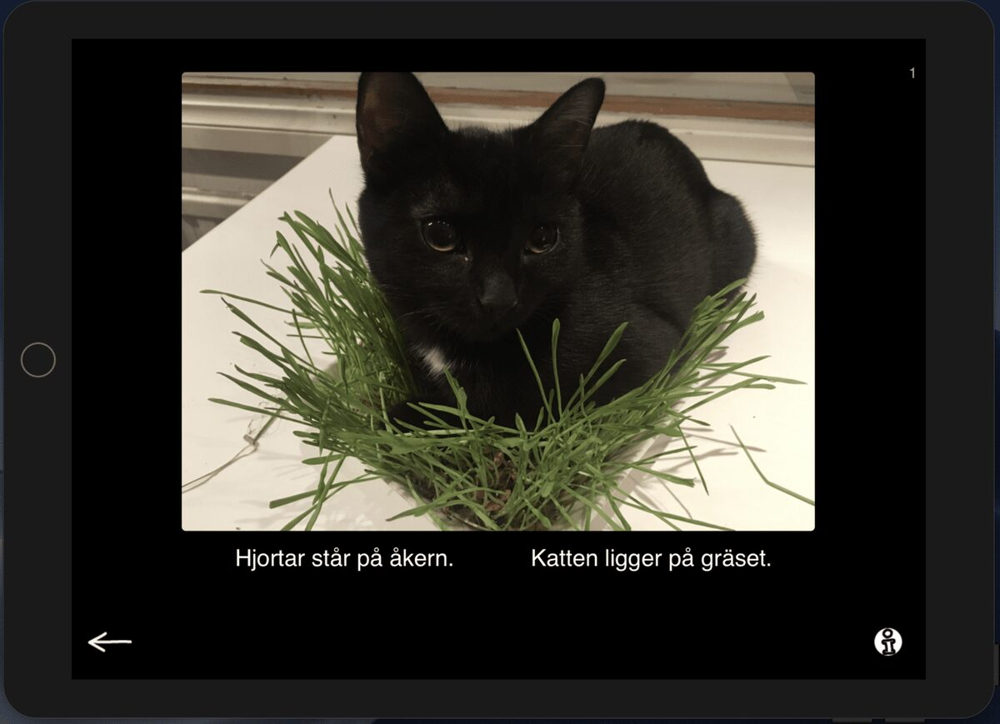
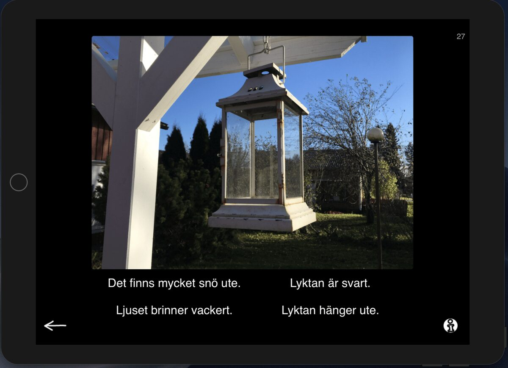
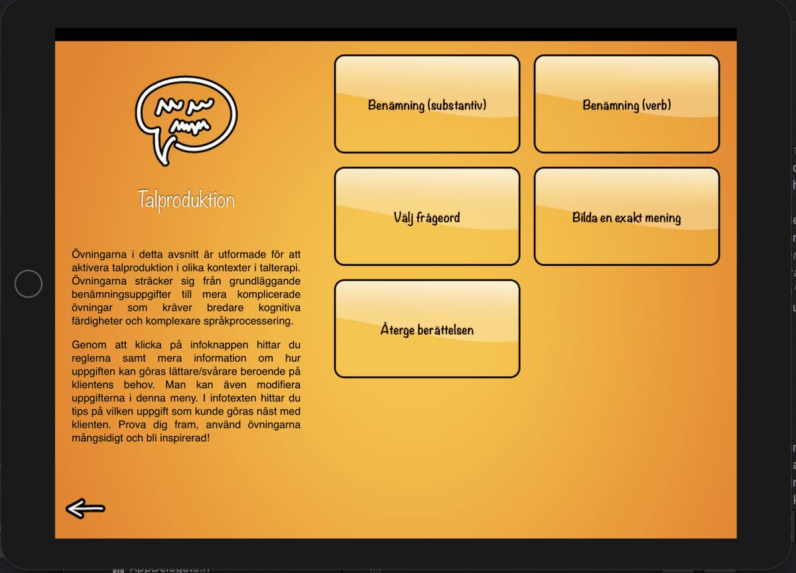
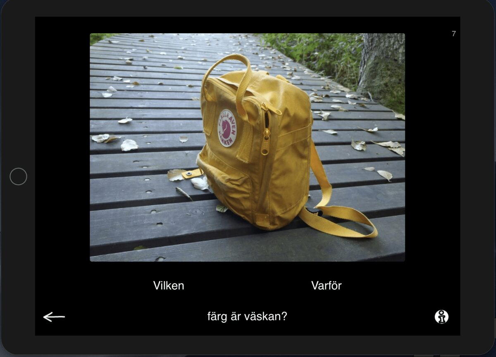
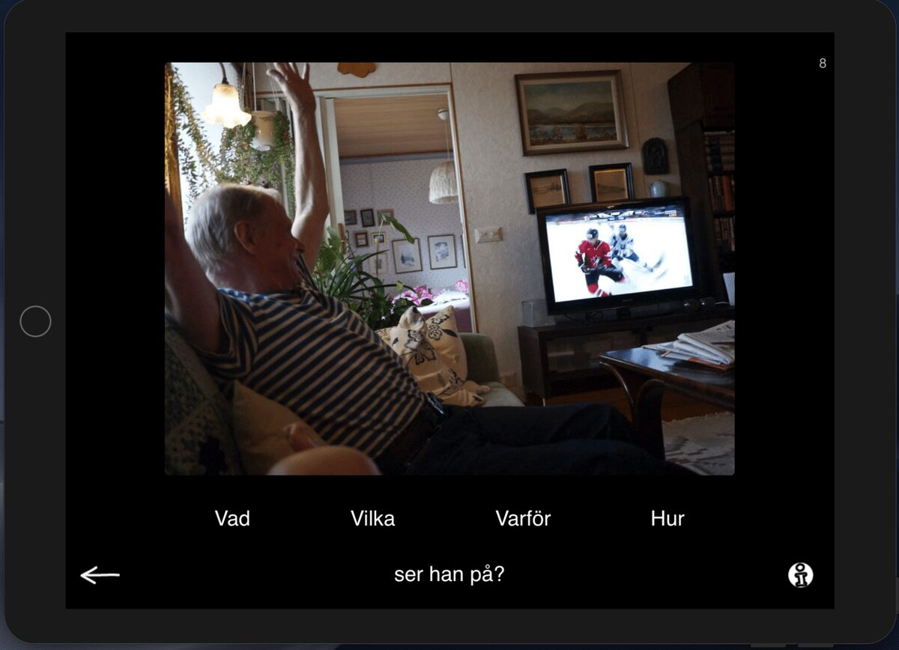
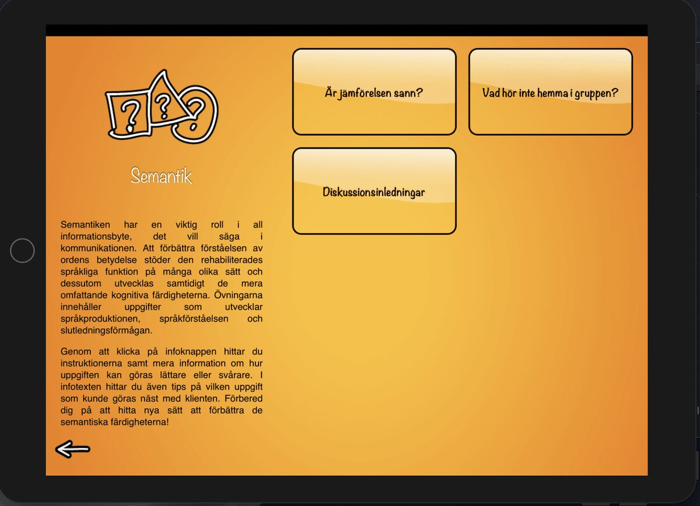
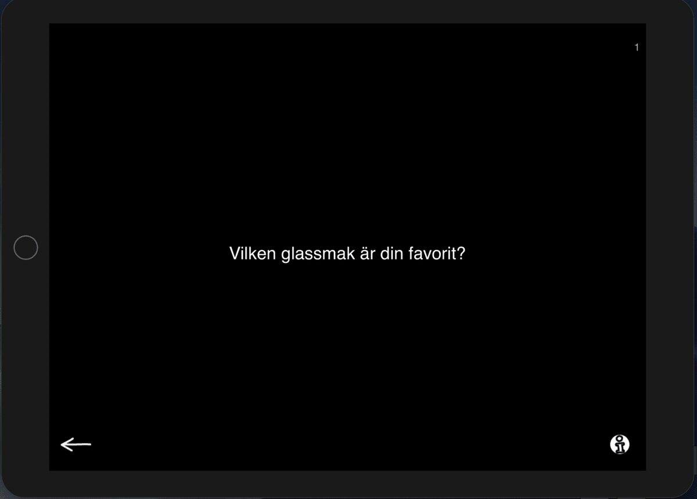
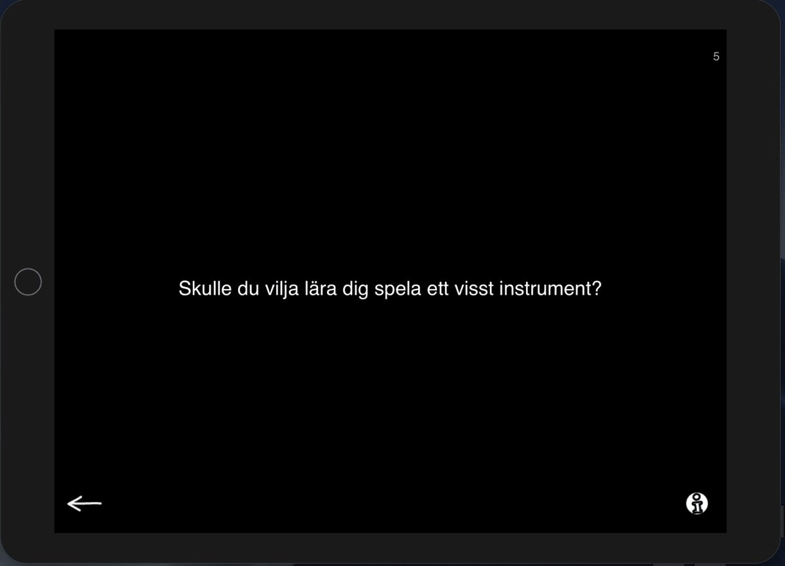

We just launched our first official update to our Sanapsis Svenska (1.3), yay! To celebrate, this post will mostly be about the newly localized exercises for Swedish. So, if you are using the English or Finnish version of Sanapsis, mostly old news. But not to despair - we think one can always use a refresher. Maybe you have not been taking these exercises for a spin with your patients lately and could use some motivation to make more use of the stuff you already own. Let’s find out!
The update comes with three new exercises to our Swedish version of Sanapsis: Discussion starters, Build a question and Sentence and picture. Old favorites with many possibilities!
Let’s first have a look at Sentence and Picture / Lause ja kuva / Mening och bild. You see this one in our Reading- section, right up there in the right hand corner of the menu.

Reading menu
Sentence and Picture / Lause ja kuva / Mening och bild - exercise comes with two levels. Level one shows an image and two, three or four sentences, depending on the settings. Ask your patient to choose the one that matches the image. On level 1 the sentences are rather simple and very different from each other. On level 2 the setup is the same but sentences are more abstract or semantically closer. As the patient chooses a sentence the text changes color but no feedback is given by the app. It’s up to you to decide how to make the most of the material in your session.

Level 1, two options

Level 2, four options
Some of our exercises are provided to you in multiple categories. Mostly for easy access but also because we do not want you to get stuck with just one way to use the materials you have at your disposal. Creativity and flexibility, that’s what it takes to become a fluent Sanapsis user! One of these exercises is Build a question / Valitse kysymyssana / Välj frågeordet and you can find it in categories Production and Reading.

Production menu

Reading menu
Build a question looks very similar to the Sentence and Picture we just introduced. So, if you know your way around that, this one is an easy step. Here you see an image, a sentence that lacks a question word and two, three or four question words. You know it by now, right? Yes! You ask your patient to choose a question word that completes the sentence. Under the info button you see in the lower right hand corner you can always find all the settings and more info on how and when to use this exercise. Nice.

Build a question, two options

Build a question, four options
For the next one we are going to looking at categories Semantics and Reading.

Semantics menu

Reading menu
In both of these categories you will find a new exercise: Discussion starters / Keskustelunkäynnistäjät / Diskussioninledningar. This is a simple but powerful exercise. It comes with two levels (settings under the info button, as usual). Level 1 has straightforward questions you can mostly answer with one or two words. I love using this when introducing using AAC-methods, great for writing down some options for the patient to point at or even make use of pictures and drawings! Level 2 comes with more complex questions that invite the patient to tell more. If you hand the iPad over to your patient and let them choose the topic to discuss with you, you create a perfect place to work on making initiatives and asking for more info.

Level 1

Level 2
That it our update for Sanapsis Svenska 1.3. If you haven’t yet, you can download it for your iPad from the Appstore. Buy once, get all future updates for free (no in-app purchases, ever)!
Play around, invite your patients to play around and most importantly - let us know what you think! We love hearing what works, what could use improvement, where we have missed a typo or what you would like to see added. You can always contact us via this website or send an email to sanapsis@puheklinikka.net (in English, Finnish or Swedish). Looking forward to hearing from you!